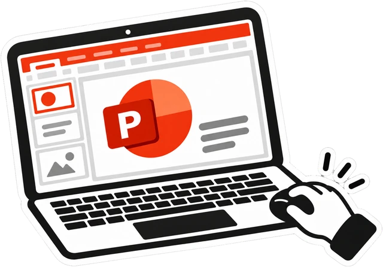
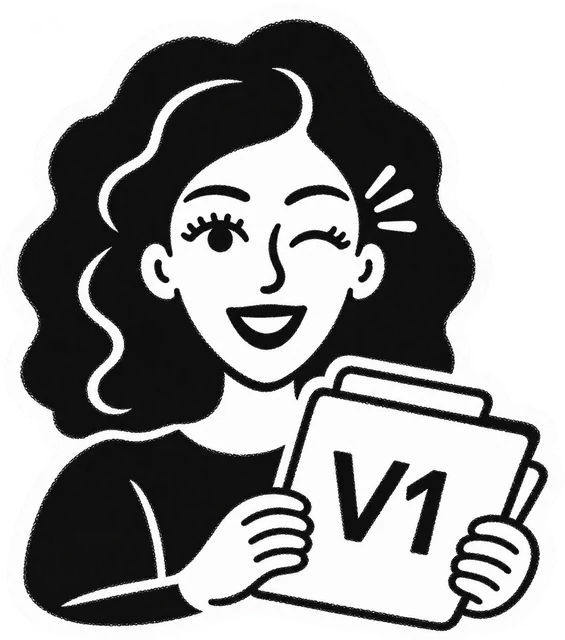
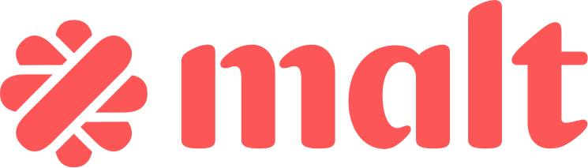
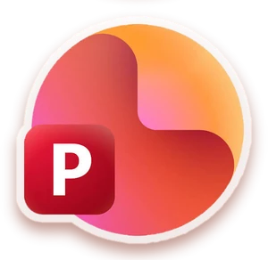

On fait le point
On échange sur votre présentation, vos objectifs et vos attentes. On passe en revue vos slides pour mettre en évidence les points clés et définir la direction à prendre. Le tout en visio.
Vos idées méritent mieux qu’un PowerPoint ordinaire.Depuis 10 ans, je transforme vos présentations
pour vous aider à faire la différence.
Ils m’ont fait confiance : Sanofi, Prologis, Linxea, Capgemini, Decathlon, Bouygues Immobilier, BPCE, Sherpa, HUH, Ring Twice, TheraPanacea, Sun’R, AliraHealth, Koena, Myconnecting, Stam Europe, Entourage.
Services
Convaincre vos prospects et faciliter la décision avec une présentation qui met en avant les points forts de votre offre.
Un PowerPoint professionnel, à votre image, facile à utiliser et à actualiser.
Vous vous reconnaissez ?
J’ai une présentation PowerPoint de 25 slides que j’utilise en rendez-vous client. Le contenu est bon, mais visuellement, ça fait très amateur. J’aimerais quelque chose de plus pro, qui donne confiance.
Notre présentation commerciale est vieillissante et ne reflète plus notre identité. J’ai besoin de la moderniser pour qu’elle soit attractive et facile à mettre à jour.Boostons votre présentation
Donner envie d’investir dès les premières slides avec un pitch deck clair et soigné.
Des chiffres clés bien visibles, des graphiques lisibles et un design adapté à votre projet.
Vous vous reconnaissez ?
J’ai tous mes chiffres et mon argumentaire, mais je ne sais pas comment les mettre en valeur. J’ai utilisé un template mais dès que j’y ajoute mes propres infos, le résultat est brouillon. J’ai besoin d’un pitch deck clair, professionnel et percutant, à la hauteur du travail engagé.
Je prépare une levée de fonds mais mon pitch deck manque d’impact visuel. J’aimerais un rendu vraiment pro qui crée l’effet WOW.Parlons de votre pitch
Des supports clairs et visuels qui gardent l’attention, même avec des contenus denses.
Je transforme vos PowerPoint de formation avec des schémas, des repères visuels et une mise en page plus agréable à suivre.
Vous vous reconnaissez ?
On utilise les mêmes PowerPoint de formation depuis des années. Chaque formateur a ajouté ses propres slides et aujourd’hui, il n’y a plus vraiment de cohérence. On aurait besoin de remettre tout ça au propre et de moderniser l’ensemble.
Mes formations sont riches en contenu, mais mes slides sont trop chargées et les participants décrochent rapidement. J’ai besoin de supports plus visuels et dynamiques pour maintenir leur attention et rendre l’expérience plus agréable.Dynamisons vos formations
Des slides qui portent votre discours sans le surcharger.
Des visuels grand format, une mise en page épurée et des informations faciles à lire, même au fond de la salle.
Vous vous reconnaissez ?
Je dois intervenir lors d’une conférence devant 300 personnes. Mon discours est prêt, mais mes slides sont trop chargées. J’aimerais quelque chose de beaucoup plus visuel, qui accompagne mon intervention sans surcharger l’écran.
Nous organisons un séminaire et plusieurs intervenants vont prendre la parole. J’ai besoin d’harmoniser la présentation pour garantir une identité visuelle cohérente et un rendu à la hauteur de notre événement.Marquons les esprits
Une proposition claire, structurée et convaincante, avec des informations bien présentées, des schémas pour illustrer vos méthodologies et vos points forts mis en évidence. Pour vos dossiers comme pour vos soutenances orales.
Vous vous reconnaissez ?
On doit remettre notre réponse à un appel d’offres dans quelques jours. Sur le fond, tout est là, mais le document fait des dizaines de pages et c’est assez indigeste. On aimerait une mise en page plus soignée, avec des schémas et des visuels pour faire ressortir nos points forts.
Nous avons été présélectionnés pour un appel d’offres stratégique et devons défendre notre proposition à l’oral. Nous maîtrisons notre sujet, mais nous avons besoin de slides qui vont droit au but et qui montrent clairement pourquoi notre proposition est la bonne.Valorisons votre proposition
Réalisations
Style graphique
Ma méthode
On échange sur votre présentation, vos objectifs et vos attentes. On passe en revue vos slides pour mettre en évidence les points clés et définir la direction à prendre. Le tout en visio.

Je donne vie à votre présentation avec un design sur-mesure, adapté à votre identité et à votre cible. Chaque slide est pensée pour mettre en valeur vos idées et rendre votre message clair et impactant.

Je vous présente le résultat et nous affinons les détails selon vos retours. Les allers-retours sont illimités sur le design, jusqu’à ce que votre présentation vous convienne à 100 %.
Votre présentation est prête ! Vous recevrez votre fichier PowerPoint (.pptx), entièrement modifiable, pour pouvoir l’utiliser, l’adapter et le faire évoluer en toute autonomie.
Témoignages
Augustin, Fondateur
Ring Twice (ex Frizbiz)
Réalisation d’une présentation PowerPoint d’une cinquantaine de slides pour une présentation devant l’ensemble des collaborateurs de l’entreprise. Présentation dynamique de grande qualité, forte réactivité et proactivité. Force de proposition, autonomie. Je recommande vivement Marina pour ce type de prestation.
5,0
sur 33 évaluations

Jonathan, Fondateur
Fydem
Marina nous a aidé à mettre en forme une présentation commerciale. Le résultat est remarquable ! Elle est très réactive, pertinente et apporte une vision à votre projet. Nous la recommandons vivement et n’hésiterons pas à la solliciter très prochainement.
Catherine, CTO
TheraPanacea
Marina a très bien compris notre attente et la philosophie de la présentation que nous souhaitions, elle a proposé spontanément des idées qui amélioraient notre projet initial. Le travail réalisé nous convient parfaitement et a été livré dans les temps malgré des délais courts ! Je recommande sans hésitation !
Jean Michel, Associé
Sherpa
Marina est capable de travailler en parfaite autonomie, elle tient les délais et il n’y a jamais de mauvaise surprise ni sur la qualité ni sur le volume. Merci. Je recommande vivement.
Nicolas, Fondateur
HUH
Très bonne communication avec Marina, qui s’est montrée indépendante sur le projet. Un simple brief et Marina a délivré un résultat bien au-dessus de nos attentes. On retravaillera ensemble, c’est certain.

Derrière vos slides
Je transforme vos contenus en présentations claires, percutantes et mémorables.
Mon objectif : que vos slides captent l’attention et que l’on se souvienne de vous.
Freelance indépendante, je gère chaque projet de A à Z. Sans intermédiaire, sans sous-traitance. Je limite le nombre de projets pour vous offrir un accompagnement sur mesure et une vraie réactivité. Basée à Paris, je travaille avec des entreprises, startups et agences partout en France, à distance ou en rendez-vous à Paris.
Un seul contact. Une vraie implication.
Des slides qui font la différence.